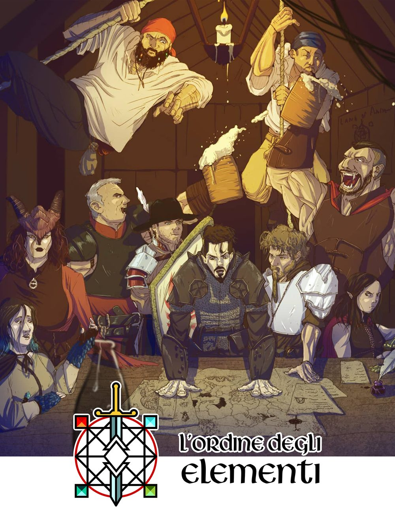

L'Ordine degli Elementi
Associazione di promozione sociale che organizza giochi di ruolo dal vivo. La nostra campagna, ambientata nel mondo di Land of Ancient, va avanti da più di dieci anni e la storia la scrivono i giocatori, evento dopo evento.
Vedi gli eventiIscriviti
Che cos'è un larp
Il larp (live action role-playing) è un gioco in cui interpreti un personaggio in un mondo immaginario. A differenza del gioco di ruolo da tavolo, le azioni non vengono solo raccontate: le recitiamo con il corpo. Si gioca in costume, con attrezzatura coerente con l'ambientazione.
Come partecipare
- Scegli un evento nella pagina Eventi e iscriviti con il modulo.
- Crea il tuo personaggio: razza, abilità e un background che racconti chi è e cosa vuole.
- Invia il background agli organizzatori almeno 10 giorni prima dell'evento.
Il mondo di Land of Ancient
Il mondo fu forgiato da Gaiathur e dalla Civiltà dei Creatori, che lo permearono di una energia permanente: la magia. Oggi è diviso in quattro grandi regni, ognuno legato a un elemento. Secoli dopo la guerra contro i Manathull, creature di un altro piano che si cibano dell'energia del mondo, i segni del loro ritorno si moltiplicano e i popoli devono unirsi di nuovo.
Fuoco
Il Patriarcato del Fuoco ha capitale a Pianfuocato. Il patriarca si sceglie tra i dieci Campioni, con una sfida all'ultimo sangue. Oggi il trono è vuoto e restano due Campioni a difendere il regno.
Acqua
Il Matriarcato dell'Acqua, guidato da Lady Awelta, fu il più colpito dalla grande guerra. Il suo popolo, aperto e pacifico, vive soprattutto di navigazione tra Acquaviva, Fontesacra e Grandefiume.
Terra
Il Matriarcato della Terra ha capitale a Lagorotto, tra Boscofitto, Rocciascura e Riccocolle. Qui vivono morfici, elfi silvani, umani e nani, e qui sono comparsi i primi segnali del ritorno dei Manathull.
Aria
Il Patriarcato dell'Aria ha capitale a Delo, città sacra e sede del Culto dell'Oracolo, che custodisce il Libro Sacro e comunica con i Creatori.
Tra i regni ci sono otto regioni indipendenti, e gilde e culti che intrecciano alleanze e rivalità. Chi gioca con noi entra in una storia già in corso, dove ogni scelta lascia conseguenze.
Seguici
Annunci, foto e novità degli eventi escono sul nostro profilo Instagram @land_of_ancient.